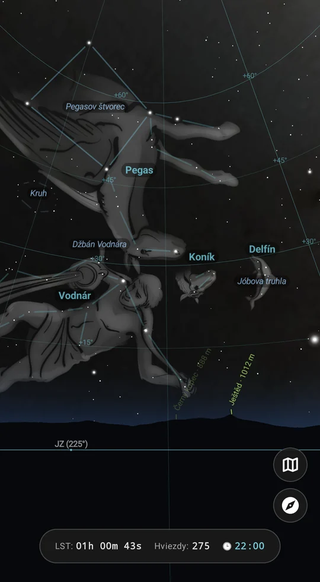
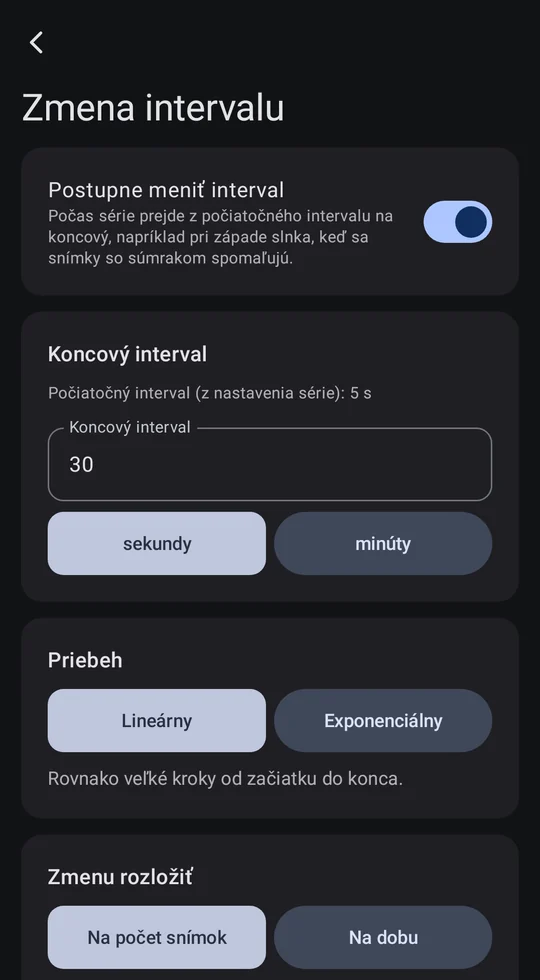
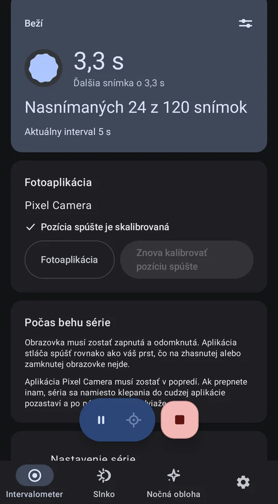
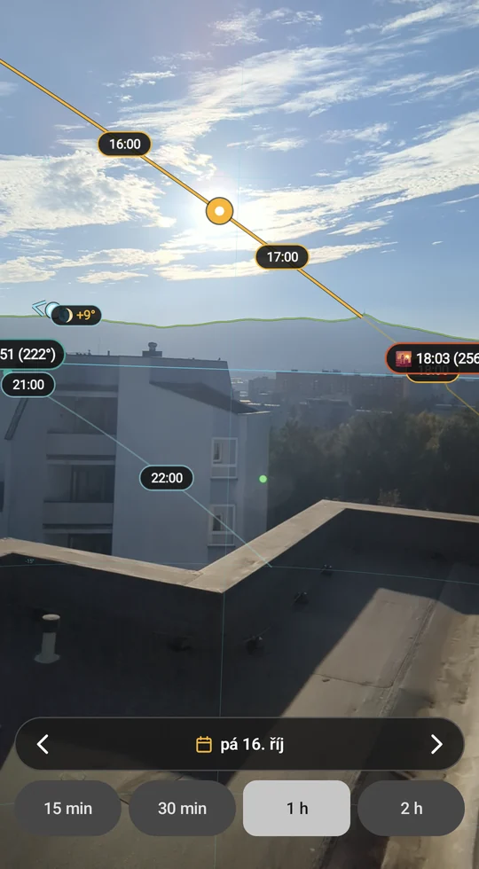
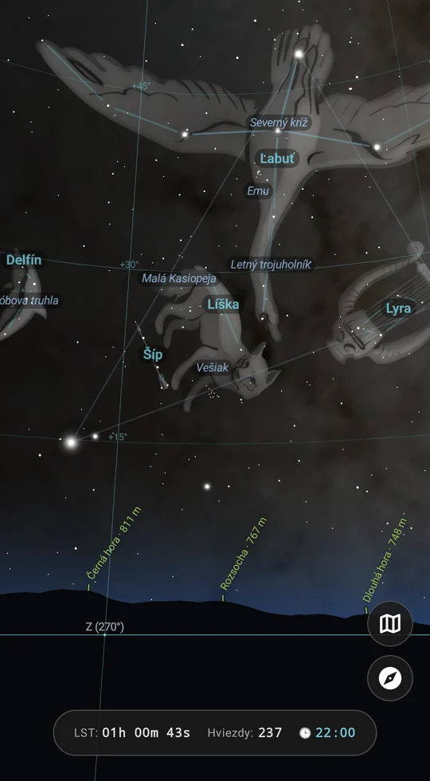
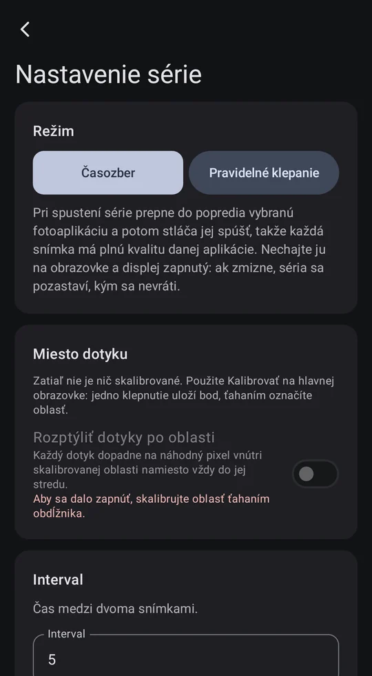

Časozber bez kompromisov
CAELIS stláča spúšť priamo vo vašej aplikácii fotoaparátu, takže každá snímka prejde HDR+, nočným aj astro režimom telefónu.
ViacIntervalometer a plánovač oblohy pre Android
Časozber, ktorý fotí váš vlastný fotoaparát so všetkým, čo vie – a Slnko, Mesiac a hviezdy nakreslené nad skutočnou krajinou.
Zadarmo · Bez reklám · Android 11+

Tri nástroje, jedna aplikácia
CAELIS stláča spúšť priamo vo vašej aplikácii fotoaparátu, takže každá snímka prejde HDR+, nočným aj astro režimom telefónu.
ViacIch dráha priamo v obraze kamery, s časovými značkami, zlatou hodinkou a súmrakmi – voči skutočnému horizontu z modelu terénu.
ViacHviezdy, planéty, Mesiac a Mliečna cesta nad skutočnou krajinou, s východmi a západmi počítanými voči skutočným kopcom.
ViacČasozber



Slnko a Mesiac v AR
Nočná obloha v AR

Ako to funguje
Google Camera alebo akúkoľvek inú. CAELIS ju pri štarte série otvorí sám.
Jedným klepnutím označíte tlačidlo spúšte. Pozícia sa pre danú aplikáciu zapamätá.
Interval, počet snímok, ramping a podmienky zastavenia – a potom telefón na statív.

Súkromie na prvom mieste
Internet slúži len na stiahnutie terénu a názvov vrcholov. Odosiela sa iba názov mapového štvorca 1° × 1° – nikdy súradnice.
Voliteľné Google ARCore robí AR stabilnejším. Skôr než ho zapnete, aplikácia vám povie, čo Google dostáva.
Len aby otvorila zvolenú aplikáciu fotoaparátu a stlačila v nej spúšť, alebo klepla na bod, ktorý ste nastavili. Nič z toho, čo vidí, neukladá ani neodosiela. AR moduly ju nepotrebujú.
Celá aplikácia je zverejnená pod licenciou GPL-3.0. Prečítajte si ju, zostavte, overte.
Snímky obrazovky
Zadarmo na Google Play. Vyžaduje Android 11 alebo novší.